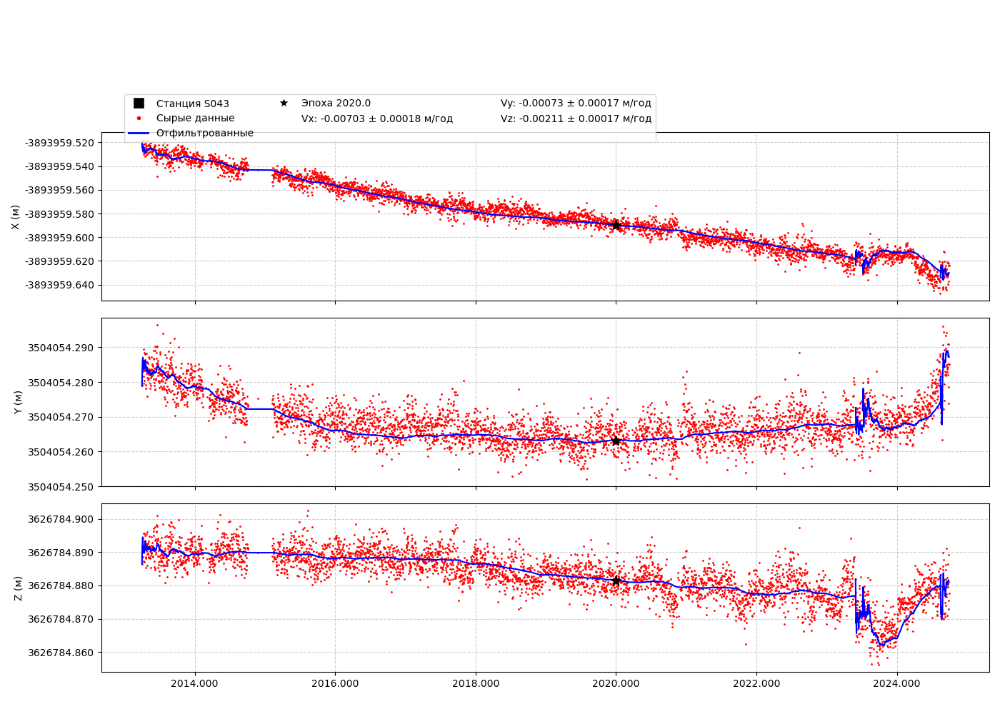

📍 Станция S043
Координаты (на эпоху 2020.0)
Широта: 34.877°
Долгота: 138.017°
Высота: 227.320 м
X_2020: -3893959.590
Y_2020: 3504054.263
Z_2020: 3626784.881
Файл txyz2
Скачать S043.txyz2
Графики координат XYZ

Интерактивный график координат
🔎 Открыть интерактивный график